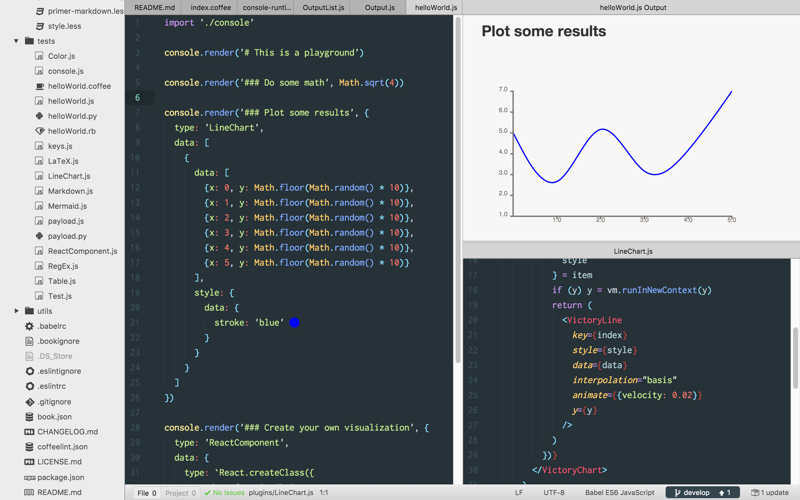

Plugins
Plugins are React components with a single prop for input data (this.props.data) and a render method for rendering that input data into DOM. Plugins declare their own input data requirements using React's PropTypes.
Creating and editing plugins

Plugins are edited live inline with their rendered output. Rendered output is "hot reloaded" whenever the plugin source changes. Any dependencies that are declared while editing will be installed automatically, relieving the author of any module or workspace management; simply create a React component to visualize your output data and viola, there it is.
You can create a new plugin and access the plugin directory using Atom's command palette.
Create a plugin
Search for Magic Console: Create New Plugin
Open plugins directory
Search for Magic Console: Open plugins directory
Plugin template
// Use Atom's Babel
'use babel'
import React, {Component, PropTypes} from 'react'
// Create a React component
class New extends Component {
// The only required method for a React component
render() {
return (
<div>
{JSON.stringify(this.props.data)}
</div>
)
}
}
// Define the type of `this.props.data`
New.propTypes = {
// Using React's provided PropTypes
data: PropTypes.any.isRequired
// Using a custom validation function
// data: (props, propName, componentName) => {
// if (!/^(sequenceDiagram|graph|gantt)/.test(props[propName])) return new Error('Validation failed!')
// return null
// }
}
// Export the plugin
export default New
Requirements
- render: All React components require a render method. The render method must return a valid React element using
React.createElement(type, props, children)or JSX. Use the render method to declare how the plugin should render output data. See React's component specs docs for more info. - propTypes: Prop types are used to validate the type of incoming props. Use the propTypes method to declare which data types are accepted by the plugin. See React's prop validation docs for more info.
- PropType functions must return
nullif passing andErrorif not passing
- PropType functions must return